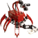
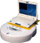
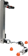
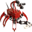
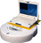
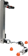

Tekkotsu
an open source project created & maintainedat Carnegie Mellon University
OPEN-R SDK Installation Guide
Sony provides the OPEN-R software development kit in order to allow users to program their AIBOs. Tekkotsu builds on top of the capabilities of OPEN-R, and almost entirely encapsulates the API, so that you do not need to learn the intricacies of OPEN-R programming. However, in order to compile any code for the AIBO, you must first install OPEN-R and build a MIPS cross-compiler.
Prerequisites:
- A UNIX compatable environment, such as Linux, Mac OS X, or Cygwin under Windows.
- Cygwin users note: You may want to refer our own Cygwin installation guide to make sure you have everything you need.
- Mac OS X Users Note: You must have installed the BSD Subsystem package and the Developer Tools (XCode) in order to build the development environment
- Ubuntu users: You will need to:
sudo apt-get install flex gettext patch bison texinfo make g++
Files Needed:
- build-aibo-toolchain-3.3.6-r2.sh
- gcc-3.3.6.tar.bz2 (22.9MB, do not unzip, mirrors)
- binutils-2.15.tar.bz2 (11.0MB, do not unzip, mirrors)
- newlib-1.15.0.tar.gz (10.2MB, do
not unzip, mirror)
- OPEN_R_SDK-1.1.5-r5.tar.gz (11.9MB,
do not unzip)
Note: Sony has discontinued the OPEN-R SDK and is no longer distributing the system binaries and header files. This is a mirror of their last known release.
Installing Sony's Aibo development environment (OPEN-R SDK)
Note: we've slightly updated the compiler
toolchain as originally used by Sony (originally gcc 3.3.2, newlib
1.10.0, binutils 2.14). We updated the toolchain because the
3.3.2-based one no longer builds under newer distributions due to
stricter language adherence in current versions of gcc. If you run into
any strange errors and want to try the original toolchain
configuration, contact us for a 3.3.2 based build script.
- Check prerequisites listed above
- Download all of the files listed above and place them together into a temporary directory.
- The build script will install the toolchain into /usr/local/OPEN_R_SDK. If you prefer a different location, edit build-aibo-toolchain-3.3.6-r2.sh now.
- If you change the installation directory, you will
need to assign the path to the OPENRSDK_ROOT
environment variable so Tekkotsu's build scripts will be able to find
it later.
- Run build-aibo-toolchain-3.3.6-r2.sh (and go find some articles to read...)
- You may need to 'chmod a+x build-aibo-toolchain-3.3.6-r2.sh' first.
- You may also need to run the script as root, or otherwise create the OPEN_R_SDK directory and ensure your user account write access.
- Your target directory (i.e. /usr/local/OPEN_R_SDK)
should now contain:
OPEN_R/ include/ lib/ mipsel-linux/
bin/ info/ man/ share/
If you are interested in experimenting with the base SDK, you should visit the OPEN-R tutorial from ENSTA University. The Tekkotsu framework will handle almost all interaction with the system for you, so this will be primarily of interest if you want to edit the low-level portions of the framework itself
That's all folks!